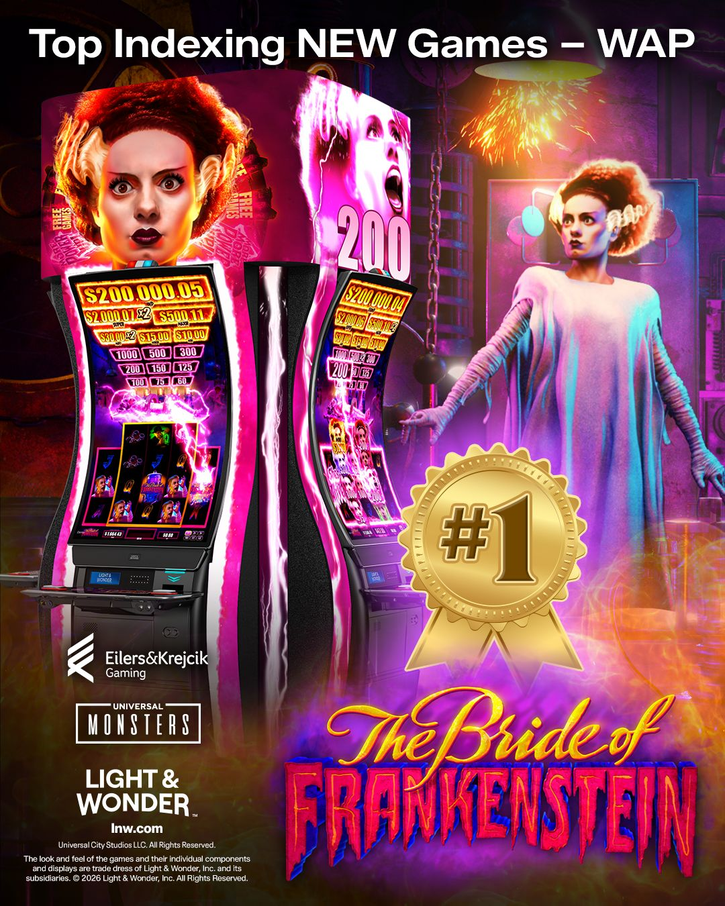
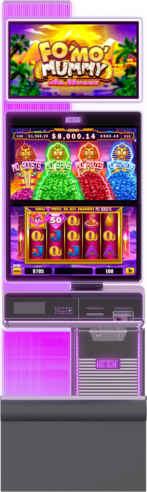
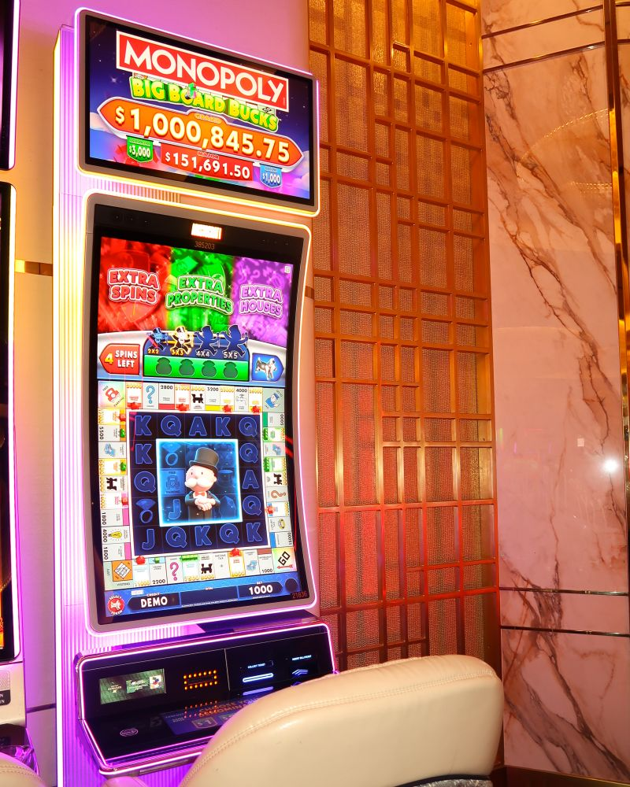
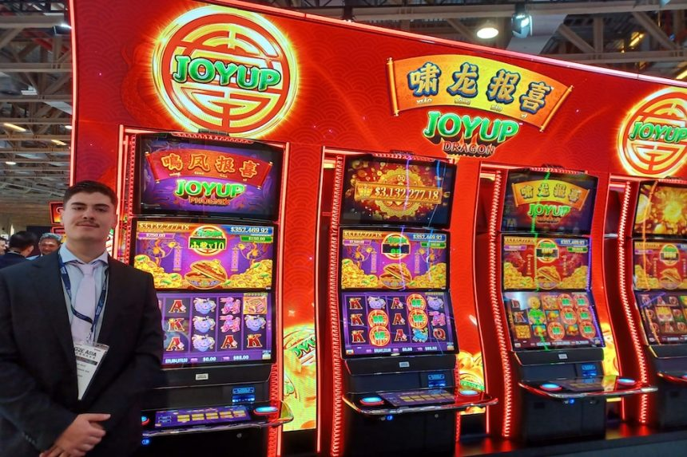
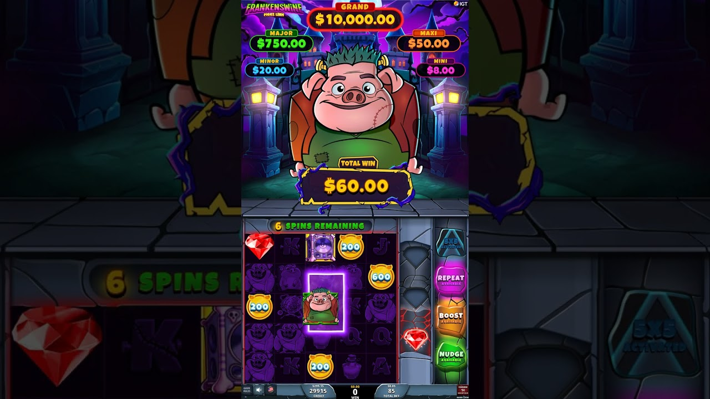

LANDBASE 競品動態
Light & Wonder《The Bride of Frankenstein》拿下 EKG 新進 WAP 遊戲榜首，並在 G2E Asia 揭示 Jin Ji Bao Xi 演化作《Joyup》與 Cosmic Dual 新機櫃；Aristocrat 推出 Fo' Mo' Mummy 遊戲家族、於威尼斯人裝設全球首台 $1M MONOPOLY Big Board Bucks；IGT 推出 Piggz Link 系列新作《Frankenswine》
Light & Wonder《The Bride of Frankenstein》登上 EKG 新進 WAP 遊戲榜第一

L&W 公布，旗下《The Bride of Frankenstein》在最新一期 Eilers & Krejcik 評比中拿下「新進 WAP 遊戲」指數第一名。該作結合環球影業 Universal Monsters IP 與強節奏玩法、招牌特色，是 L&W 近期高階廣域連線（WAP）機種中表現最突出的一款。
閱讀更多三大主廠焦點
Aristocrat

Aristocrat 推出 Fo' Mo' Mummy 遊戲家族，首發《Mr Mummy》《Ms Mummy》主打四重變身機制
Aristocrat Gaming 擴充旗下 Mo' Mummy 系列，推出 Fo' Mo' Mummy 家族，首發雙作為 The Baron Upright 機櫃獨家，已在北美賭場上線。兩款延續系列招牌的 Cash Collect，並導入新的「四重變身（quadruple metamorphic）」機制，可個別或同時觸發最多四組特色；另各配置五種 bonus，來源具名其中四種：Mo' Boost 強化寶石與金幣、Mo' Spins 於 bonus 中加贈免費遊戲、Mo' Prizes 隨機增加寶石金幣、Mo' Symbols 在單一位置給予雙倍寶石金幣。《Ms Mummy》另有寶箱符號，可加贈最多 5 枚 Cash on Reel 金幣或鑽石。Aristocrat 已將亞洲列為 Baron 機櫃的重點成長市場。
閱讀更多
全球首台 $1M《MONOPOLY Big Board Bucks》進駐拉斯維加斯威尼斯人
Aristocrat 在拉斯維加斯 The Venetian Resort 裝設全球第一台頂獎 100 萬美元版本的《MONOPOLY Big Board Bucks》。這款今年稍早首發即繳出好成績的授權作，此次以高額投注版本再往上推一階，把經典 IP 的懷舊感與高限額體驗結合，屬同系列首見的規格。
閱讀更多Light & Wonder

《Joyup》：Jin Ji Bao Xi 的正統演化，搭載全新 Cosmic Dual 雙螢機櫃
L&W 在澳門 G2E Asia 2026 揭示《Joyup》，把該公司在亞洲最賣座的 Jin Ji Bao Xi 系列做正統演化，已取得多數亞洲市場認證，主題分 Phoenix 與 Dragon 兩款。核心是全新的「Joyup coin」：沿用玩家熟悉的 Top up bonus 與免費遊戲，再加上動態升級 repeat win 獎項的能力，底層模型、玩法與基礎賠付表則維持原系列樣貌。版本上主樓面走連線累積彩金，另有走單機累積彩金的 VIP 版。搭載的 Cosmic Dual 機櫃採雙 27 吋 HD 窄邊框螢幕與 iDECK 操作面板，L&W 強調它是補充而非取代現有產品線，Kascada 27 的既有內容仍會續留樓面。
閱讀更多IGT

IGT《Piggz Link: Frankenswine》實機玩法影片曝光，Monster Money 系列再添一作
IGT 釋出《Piggz Link: Frankenswine》的實機玩法影片，屬 Piggz Link 系列在 Monster Money 主題下的新作，內容涵蓋實際輪帶演出與 bonus 特色展示，另有製作團隊的產品說明。此作延續 Piggz Link 系列，換上科學怪人風格題材。
閱讀更多其他廠商
Konami 新作《Fortune Hearts》公開官方遊戲影片
Konami Gaming 推出新作《Fortune Hearts》並釋出官方遊戲影片，核心賣點是一項獎項特色。Konami 另在社群預告，這款來自 Konami Australia 的熱門作即將前進新市場。
閱讀更多Aruze《Triple Treasure Pot Spin》：三罐玩法再進化，新增轉盤 bonus
Aruze Gaming 推出 Triple Treasure Pot 系列新作《Triple Treasure Pot Spin》，維持系列招牌的三個獎罐收集架構，並把特色觸發頻率調高，另外新增一個轉盤 bonus 作為變化來源。屬同系列的延伸強化而非全新架構。
閱讀更多NOVOMATIC 推出 Impera Line HD Edition 10 多遊戲機組
NOVOMATIC 發表新一代 Impera Line HD Edition 10，以單一多遊戲選單整合玩家熟悉的經典作與新遊戲內容，替賭場樓面提供更高的內容密度。
閱讀更多